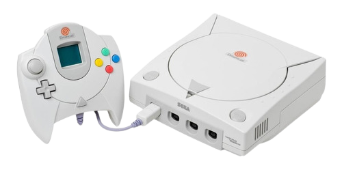
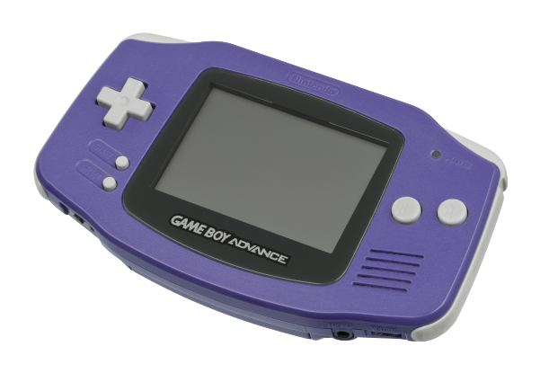
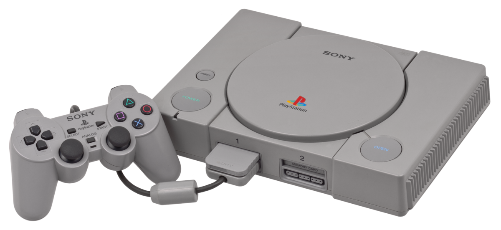

Vamos começar pelo famoso Nintendo 64, ele foi lançado no ano de 1996 e vendeu por volta de 33 milhões de unidades e seu jogo mais vendido foi o Super Mario 64, mas teve outros jogos de grande sucesso como a saga The legend of zelda; ele tinha uma cpu de 64bit com 93.75MHz, ele tinha 36Mbit de memória e tem uma velocidade de tranmissão de 4500MBit/s e seu audio era Stereo de 16Bit 48kHz.

O Dreamcast foi desenvolvido pela sega no ano de 1998, ele vendeu por volta de 9 milhões de copias, seu jogo mais popular foi Sonic Adventure, e também foi foi um dos poucos consoles a receber o Marvel vs Capcom 2: New Age of Heroes, sua cpu era composta por um Hitachi SH-4 com capacidade de 32Bit, sua memória Ram era de 16Mb, o video que ele entregava era uma Power VR2 de 100MHz que era integrada no sistema, a sua resolução era de 640x480 pixels.

Agora estamos aqui, com o famoso Mega Drive que era o concorente direto contra os nintendos, sua produção começou no ano de 1988 produzido pela sega, e como um bom console da Sega seu game mais vendido foi Sonic the Hedgehog, o Mega Drive teve cerca de 30 milhões de unidades vendidas, agora falando um pouco a respeito de seus componentes, ele possuia duas cpu sendo a principal uma de 16Bit da Motorola, e sua cpu secundaria era uma Zilog Z60 de 8Bit, ele tinha 64kB de memória Ram, seu video era uma 16Bit Sega VDP e sua resolução era de 320x224 pixels de 64 cores.

Agora vamos com o pequeno gigante da nintendo, o portatil Game Boy Advance, lançado no ano de 2001 teve cerca de 82 milhões de unidades vendidas, seu jogo que melhor vendeu foi o Pokémon Ruby, mas teve outros grandes sucessos da mesma fraquia como o pokémon Fire red e Emerald, sua cpu era uma 16Mhz 32Bit Risc-Cpu + 8Bit Cisc-Cpu, de memória Ram ele possuia 32Kb + 256Kb sendo ambas WRAM, sua resolução era de 240x160 pixels, sua video ram era de 256Kb e ele também tinha entrada para headphones.

Agora vamos falar um pouco sobre um dos antigos de verdade, o Atari 2600 foi produzido pela Atari Corporation no ano de 1977, ele vendeu 30 milhões de unidades e seu jogo de maior sucesso de vendas foi o famoso Pac-Man, mas não tira o merito de outros como Enduro, Pitfall e Beamrider sua cpu era uma Mos 6507 de 8Bit e ele possuia 128 Bytes de memória ram, sua resolução era de 160x192 pixels, o seu canal de audio era um 2 channels of 1Bit monaural sound.
